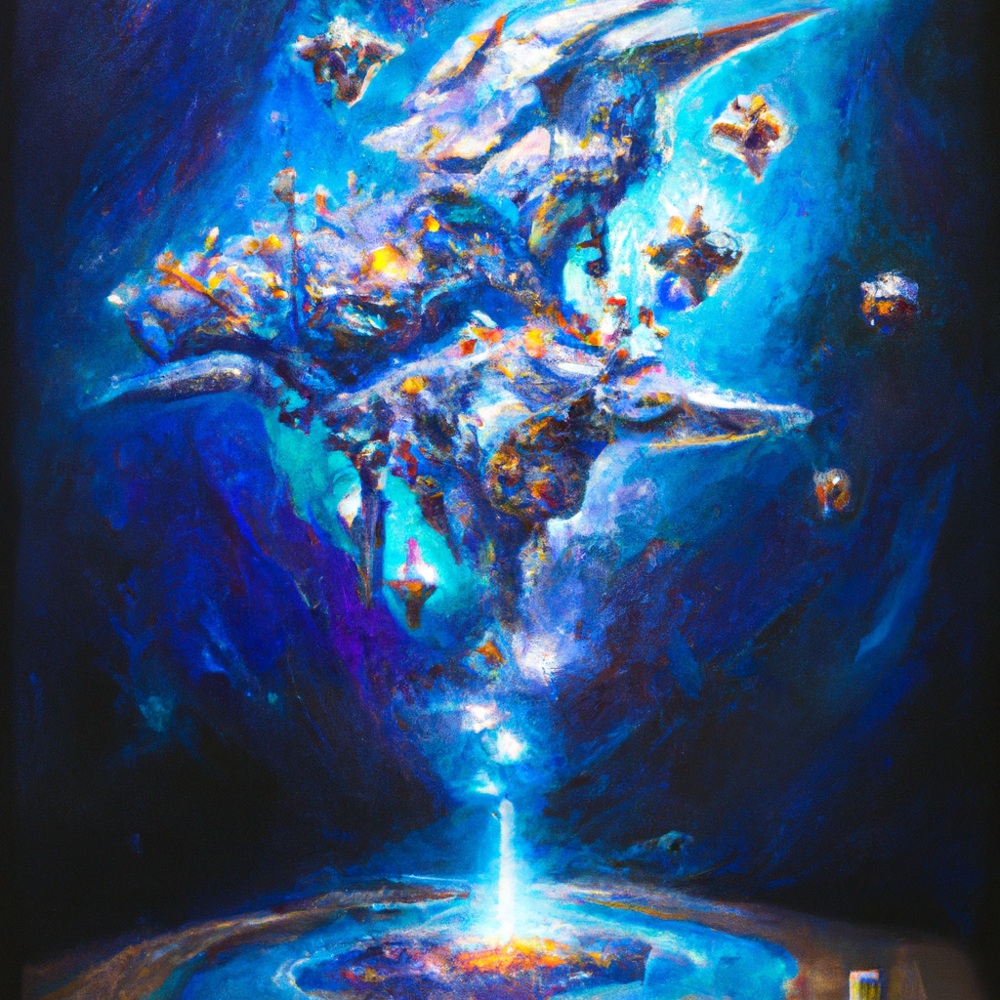

Starcraft is a perfectly balanced game
Playing video games is one of my favorite hobbies. Recently, I’ve been playing a lot of Starcraft and I’ve been loving it. Starcraft is a real-time strategy game that is incredibly well balanced. What I mean by this is that no matter which race you choose, Zerg, Protoss, or Terran, you can be successful if you are a skilled player. This makes the game incredibly enjoyable because you can’t just pick the one race that is overpowered and win every game.
I also love how there is a very high skill ceiling in Starcraft. Even if you are a very skilled player, there is always room to improve. The game is incredibly complex and there are so many different strategies and builds that you can use to outsmart your opponents. This makes the game incredibly rewarding because you can always learn something new and get better.
Finally, I love the amount of variety that Starcraft offers. Every game can be very different depending on what strategies your opponents choose. The game is never boring because you never know what your opponents will do.
Overall, Starcraft is a perfectly balanced game that offers a high skill ceiling and a lot of variety. It is definitely one of my favorite games to play and I would highly recommend it to anyone who loves video games.